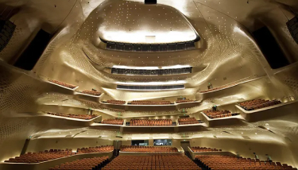
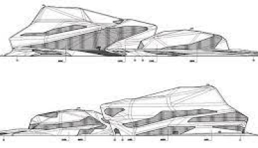
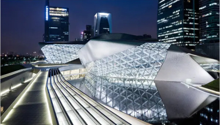

La Guangzhou Opera House, située à Guangzhou, Chine, est une réalisation architecturale magistrale conçue
par Zaha
Hadid.

Intérieur du Guangzhou Opera House à Guangzhou, Chine
Inauguré en 2010, ce chef-d'œuvre incarne l'élégance et l'innovation. Les formes fluides et organiques de
la structure
semblent émerger naturellement de son environnement urbain. La symbiose entre l'esthétique contemporaine et la
fonctionnalité artistique fait de cet opéra un lieu emblématique.

Croquis Guangzhou Opera House à Guangzhou, Chine par Zaha HADID
En explorant la Guangzhou Opera House, les visiteurs sont transportés dans un univers où l'architecture devient une
œuvre d'art vivante, témoignant du génie créatif de Zaha Hadid.

Extérieur du Guangzhou Opera House à Guangzhou, Chine